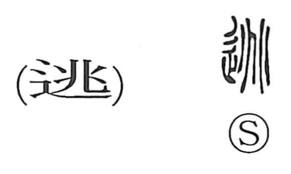

逃

Kun: nigeru, nigasu, nogasu, nogareru | On: tou
to flee ・ to escape ・ to run away ・ to avoid
Explanation
Shirakawa reads 逃 as a phono-semantic compound: the left-hand 辵 (辶) supplies the sense of moving or going, while 兆, the phonetic, pictures the divination cracks that burst open on a heated tortoise plastron. That image of a sudden, forceful splitting imparts a feeling of abrupt, vigorous motion; the same 兆 also appears in 跳 “to leap,” where the energy is expressed through the legs. Combined with the ‘going’ element, the graph comes to mean breaking into motion to get away—hence to flee and to escape—and by extension, to avoid danger or take cover.